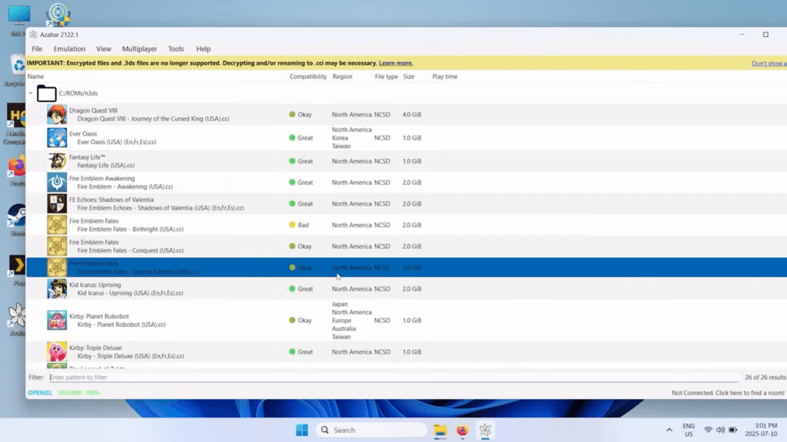
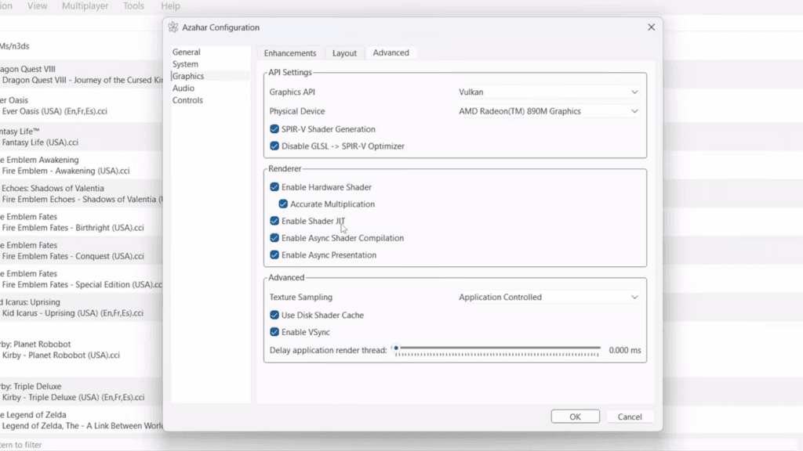

用了一年 Azahar，我把 3DS 模拟器里里外外摸了一遍
从第一次把卡带 dump 出来到现在，这台模拟器陪我走过了密钥提取、图形调优、60FPS 解锁的全过程。有些东西越用越顺手，有些坑踩了不止一次。
装它的理由很简单
我最早是 Citra 用户——准确说，是 Citra 停更前半年才入坑的那种边缘玩家。社区里喊了快两年的「Azahar 是续作」，我观望了大半年才真正切过去。理由没什么情怀，就是想试试 Vulkan 后端在笔记本上能不能比 Citra 的 OpenGL 跑得更顺。结果一切就是一年多，期间从 Azahar 2108 版本一路更到现在的 2133。

变化三连：越用越顺手的、越用越烦的、离不开的
先说好的——磁盘着色器缓存是我最没想到会这么香的功能。2126 版本之前，我每次开《塞尔达时之笛 3D》，刚进标题画面那十秒必然 stutter 到 20FPS 以下，硬挺几秒才好。当时以为 Vulkan 本身就这样，忍了大半年。结果缓存功能一上，整个游戏从头到尾帧率稳得像锁死。这个改动看起来不大，实际把我对模拟器的耐心阈值抬高了一截——现在任何让我等三秒以上的加载画面，我都会下意识去设置里找有没有缓存开关。
然后是越用越烦的部分，说出来可能有点矫情：作弊补丁这东西，我现在只敢给《马里奥赛车 7》开 60FPS，别的游戏碰都不敢碰。当初解锁《怪物猎人 3G》的帧率，结果怪物的攻击判定和动画不同步——看着挥过来的刀明明还在半空中，我已经被秒了。更绝的是《宝可梦 X》，解锁后过场动画全是两倍速，连对话音轨都赶不上字幕。这些坑不是 Azahar 的锅，是游戏引擎本身写死了 30 FPS 的假设，但模拟器侧没有一个「补丁兼容性警告」之类的东西，全靠自己踩。现在我的策略是：先原速跑一遍确认没问题，再考虑要不要解锁帧率。

离不开的功能——说个反直觉的：禁用右眼渲染。3DS 是裸眼 3D 设备，左右眼画面有细微差异，PC 端输出 2D 时右眼那一半根本用不上。关掉它之后，GPU 负载直接砍了三分之一，我的笔记本从室内 35 度飙到 50 度的时间也往后推了半小时。这个开关藏在图形设置的高级选项里，第一次翻设置时还以为是个 debug 选项。
至于碰都没再碰的功能？ArticBase 推流。这个功能的概念很美好——实体 3DS 开机，模拟器自动接上，存档两边同步。问题是我那台老 3DS 的 Wi-Fi 模块早就不太灵光，连同一局域网都经常掉，更别说稳定推流了。折腾了两个周末放弃，之后再也没打开过这个设置。
时间让它显出什么样
刚换 Azahar 那会，我高估了「开源社区接力更新」这件事——觉得 Citra 停更后，Azahar 应该很快就能把所有遗留问题补齐。实际上大版本更新的节奏比我预想的慢得多，很多我以为会修的小问题（比如某些游戏的音频延迟），到现在还在 issue tracker 里挂着。但反过来说，我也低估了它在基础功能上的扎实程度——密钥提取、图形调优、作弊系统这些「够用就行」的模块，从 2108 到 2133 几乎没出过大 bug，稳定到我有时候会忘了这东西还在迭代。
另一个修正：我之前觉得 GodMode9 提取密钥是个一次性的「麻烦事」，提取完 aes_keys.txt 扔进去就再也不用管了。直到上个月我换了电脑，新模拟器读不到存档——才发现是我当时把密钥文件直接从 3DS SD 卡复制出来的，文件名带了个 .txt.txt（Windows 默认隐藏扩展名的老坑）。那次折腾让我重新去azahar文档翻了一遍提取流程，还顺便重新去官方下载了一份最新版，发现 GodMode9 的自动 dump 其实比我当初手动操作靠谱得多，只是我当时嫌麻烦没仔细看说明。
去留结论
会不会卸载 Azahar？短期不会。现在它在我机器上的角色已经从「模拟器」变成了「3DS 游戏的存档容器」——二十多个游戏的存档都在模拟器里，迁出去重新配置一遍的成本远高于继续用它。但有两个信号会让我认真考虑换方案：一是如果有新的模拟器支持更好的在线联机（本地联机我试过最多四人房，延迟波动比较大），二是磁盘着色器缓存的体积继续膨胀到我 SSD 真扛不住——目前 cache 目录已经快 3GB 了。
说句实在的，用了一年模拟器最大的感受不是「技术进步真快」，而是「老游戏真的经得住折腾」。马里奥赛车 7 是 2011 年的游戏，跑在 4K 分辨率、60 FPS、Vulkan 后端下，画面和手感跟我第一次在 3DS 上玩的时候完全不是一个东西。模拟器做的事情其实很朴素——把老硬件的限制拆掉，让老游戏在新硬件上活出第二遍。Azahar 在这件事上做得够好，所以它还在我电脑里占着那 3GB 的空间。